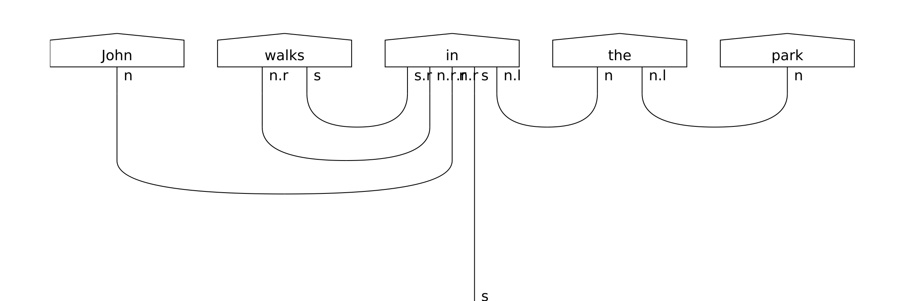
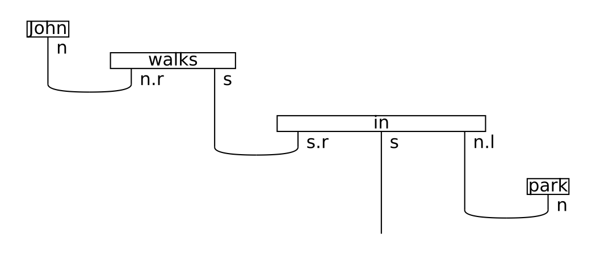

Step 2: Diagram rewriting¶
Syntactic derivations in pregroup form can become extremely complicated, which may lead to excessive use of hardware resources and prohibitively long training times. The purpose of the rewrite module is to provide a means to the user to address some of these problems, via rewriting rules that simplify the string diagram. As an example, consider again the sentence “John walks in the park”.
from lambeq.ccg2discocat import DepCCGParser
from discopy import grammar
sentence = 'John walks in the park'
# Parse the sentence and convert it into a string diagram
depccg_parser = DepCCGParser()
diagram = depccg_parser.sentence2diagram(sentence)
grammar.draw(diagram, figsize=(15,5), fontsize=17)
the string diagram of which is the following:
Note that the representation of the preposition is a tensor of order 5 in the “classical” case, or a state of 5 quantum systems in the quantum case. Applying the prepositional_phrase rewriting rule to the diagram takes advantage of the underlying compact-closed monoidal structure, by using a “cap” to bridge the discontinued subject noun wire within the preposition tensor. Furthermore, the determiner rewriting rule will apply a cap on type \(n \cdot n^l\), eliminating completely the determiner “the”.
from lambeq.rewrite import Rewriter
# Apply rewrite rule for prepositional phrases and determiners
rewriter = Rewriter(['prepositional_phrase', 'determiner'])
rewritten_diagram = rewriter(diagram)
rewritten_diagram.draw(figsize=(11,5), fontsize=15)
lambeq will print the following monoidal diagram:
We will now ask lambeq to normalise the diagram, by “stretching” the wires and re-arranging the boxes if required:
normalised_diagram = rewritten_diagram.normal_form()
normalised_diagram.draw(figsize=(7,3), fontsize=15)
which gives the following result:
{kind=link}
In the simplified diagram, the order of the preposition tensor is reduced by 2, which at least for a classical experiment, is a substantial improvement. Note also that the determiner is now eliminated, equating the meaning of the noun phrase “the park” with that of the noun “park”.
These examples clearly demonstrate the flexibility of string diagrams compared to simple tensor networks, which was one of the main reasons for choosing them as lambeq’s representation format. lambeq comes with a number of standard rewrite rules covering auxiliary verbs, connectors, adverbs, determiners and prepositional phrases.
Rewrite rule |
Description |
|---|---|
|
Removes auxiliary verbs (such as “do”) by replacing them with caps. |
|
Removes sentence connectors (such as “that”) by replacing them with caps. |
|
Removes determiners (such as “the”) by replacing them with caps. |
|
Simplifies adverbs by passing through the noun wire transparently using a cap. |
|
Simplifies prepositions by passing through the noun wire using a cap. |
Custom rewriting rules can be added by extending the RewriteRule class.